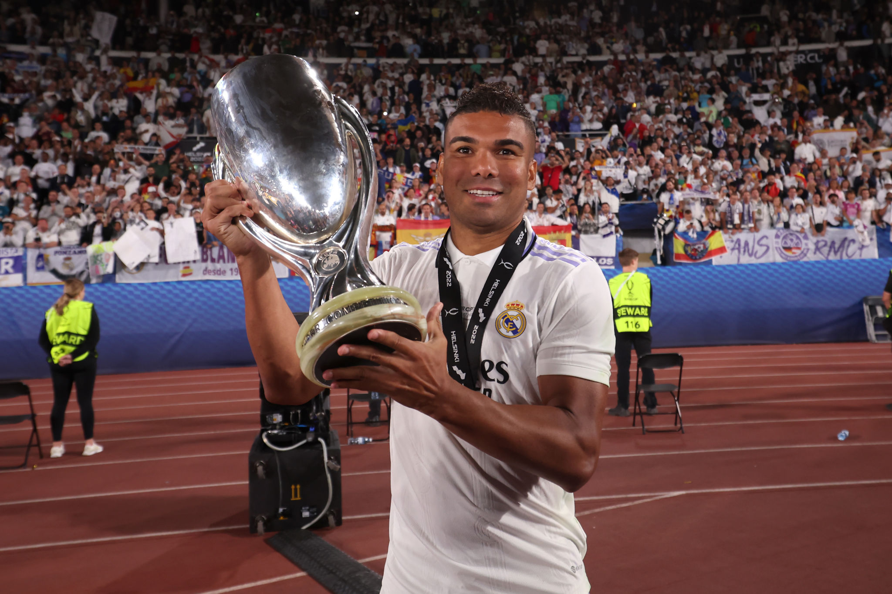

(Photo by Alex Grimm/Getty Images Sport via Getty Images)
After starting the 2022-23 campaign in horrific fashion, Erik ten Hag was finally provided with a half back:
Casemiro. With a reported fee of roughly 70m (60m up front) and a 4-year contract for the Brazilian International, I thought
it would be only logical to try and predict whether this transfer will flop or top at Old Trafford.
A Defensive Boost
The arrival of the 30-year-old should help solidify United's shaky midfield by putting Scott McTominay onto the chopping block.
While McTominay and Fred were paired up in midfield for last season - as that was the only available option with absence of a world class halfback and the
inability of either of them to do entire work - it was clear they weren't covering the pitch as well as the new Brazilian would.
Looking at the stats, no player since the 2017/18 season has intercepted or challenged for the ball more than Casemiro (589) in the top 5 leagues -
beating out the likes of Sergio Busquets, Kante, and Rodri. Additionally, the former Sao Paulo midfielder has consistently shown himself to be top in interceptions,
takeaways, and air duels won amongst other midfielders. This ability to win the ball in the air might be a key factor in boosting the United defense. For instance,
one of the main ways Brentford scored against the Red Devils in their 4-0 thrashing at the Gtech Community Stadium was through long balls behind Lisandro Martinez -
along with individual errors.
This makes Casemiro's arrival more significant as he is able to potentially eliminate that weakness from United's game. His offensive statistics don't
suffer either as he's able to give accurate passes, drive balls to the next line of attack, and be an ever-present threat in-front of goal - far more
threatening than Fred or McTominay.
Looking tactically, the 5-time Champions League champion will hope to form a balanced trio with Bruno Fernandes and Christian Eriksen, where a defensive
beast in Casemiro would complement the attacking maestros, creating a trio similar to that of Los Blancos.
Casemiro would be in the back clearing up plays while Eriksen going from box to box advancing the ball, and Bruno creating big chances. If this is
able to happen seamlessly, the future should look very promising next season for the Red Devils. Apart from complementing Fernandes and Eriksen,
Casemiro would also have no problems performing with Fred either as they often play together for the Brazilian National teams.
One common criticism is Casemiro's age. However, Casemiro has shown time and time again his consistency and class - most recently in the European
Super Cup against Eintracht Frankfurt where was named man of the match -; his age should not discourage any United fans of the move as it's very
clear he still has many years ahead of him as an elite half back.
A Financial Burden
The Brazilian might face some problems adapting to his new team. At Real Madrid, Casemiro was surrounded by others who were able to relieve some
defensive duties he was taking care of in the form of Federico Valverde. In other words, Federico Valverde taking care of the main defensive role
has allowed Casemiro simply to clean up behind the offensive line in a division they dominated in. It won't be easy for him to start covering ground
all around the pitch like he did in the past.
Financially the transfer might not help United as Casemiro's personal terms was a huge attracting factor for him in choosing to move to the Premier
League. With wages already being an issue at Manchester United - Ronaldo and De Gea highest earners with Varane and Martial not far behind - Casemiro's
transfer certainly will not help with relieving the club of the wage bill problem.
While 413,000 euros per week is not catastrophic for a player of Casemiro's importance, in a few years the aging midfielder will become rather
large problem to the wage bill, like Ronaldo currently is.
The Verdict
Despite the winning mentality and experience Casemiro brings to the United side, it probably won't be enough to make a noticeable impact to the Red Devil's current side.
Don't get me wrong, Casemiro is a fantastic signing, but it will remain an open case whether he can adapt quick enough to the fast-paced nature of English football.
Personally, I would love to see Casemiro carry his class and mentality to Old Trafford, but only time will tell what will happen and whether the verdict of a flop will stand or be contested.